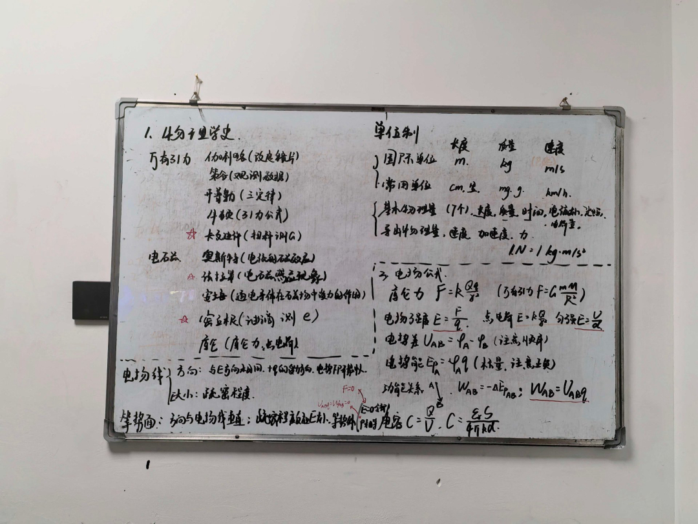
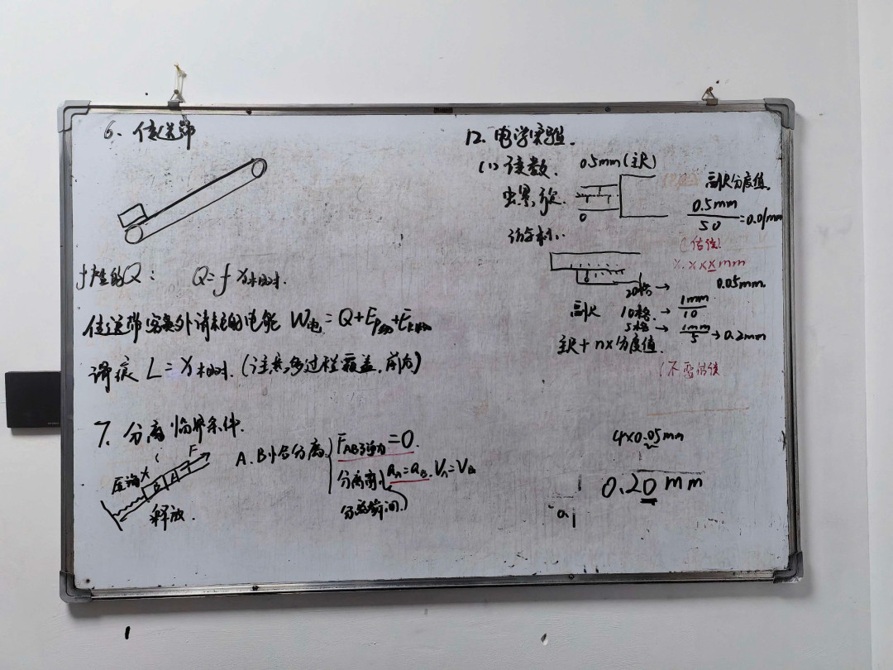

今天给一个高二学生讲期中试卷，讲的是选择题。他考了 28 分。
拿到这个分数，最常见的做法是「一道一道讲，哪题错了讲哪题」。我没这么做。
因为选择题和大题不一样。大题考「会不会推」，选择题考的是「概念吃没吃透」。一个 28 分的学生，选择题丢分大多不是不会算，而是概念是糊的——四个选项里塞一句「似是而非」的话，他就被绕进去。
所以这节课，我没急着对答案，而是把这几道选择题背后反复出现的几个概念，在黑板上一个一个讲死。整套卷子基本是选择题，只有第 12 题是电学实验，单独讲了个读数。
选择题错，错在概念，不在计算
这套卷的选择题，翻来覆去就围着几个东西转：静电场、电场线、电容器、等量异种电荷、圆周运动、斜面 v-t 图、万有引力变轨、电路动态。
它们共同的特点是：几乎不考复杂计算，考的全是「这句话对不对」。比如「电场线越密场强越大」「高轨低速大周期」「外阻等于内阻时输出功率最大」——这种一句一句的判断。
概念准，选择题就是送分；概念糊，四个选项每个都「好像对」。28 分，就是这么来的。
第一块：电场线，方向大小先钉死
电场是这套卷子的主战场。我问学生："电场线怎么画？"他支支吾吾。
这就是起点。电场线不是「随便画几条带箭头的线」，它有两条铁律，选择题最爱在它们身上做文章：
- 方向：沿电场线切线方向，也就是正电荷受力的方向；电场线从高电势指向低电势。
- 大小：看疏密。越密，场强越大。
跟它配套的是等势面——永远和电场线垂直。这两样钉死了，后面「电势、电势能、电场力做功」才有落脚点。

第二块：单位制，先会算 1N 等于什么
很多人想不到，28 分的学生会卡在单位制上。但选择题里确实有这类题：考「下面哪个是基本物理量」「导出单位怎么推」。
我在黑板上只写了一件关键的事：
1 N = 1 kg·m/s²
这一个式子，是牛顿第二定律 F = ma 的「单位形态」。公式会背、单位不会写，是很多学生共同的坑。把单位理顺，等于给判断「这句话对不对」多了一个抓手。
第三块：电路动态和功率，那个最容易骗人的最大值
电路选择题里有个经典坑：什么时候电源输出功率最大？ 还有「滑动变阻器滑片怎么动，电流、电压怎么变」的动态分析。
学生凭直觉会以为「外阻越大功率越大」，或者反过来。关键就一句话——
外阻等于内阻时，电源输出功率最大（R = r）。
如果只是变阻器自己求最大功率，那是另一回事：把变阻器之外的一切（连电源内阻一起）看作「等效电源」，再套 R = r。这个「等效」两个字，是学生最缺的那一下。
至于动态分析，套路其实固定：先找总电阻怎么变，再看总电流、路端电压怎么变，一层一层推，别跳步。
第四块：万有引力变轨，先分清三种情况
万有引力选择题里最绕的是变轨，还有那个反直觉的结论。

变轨就三种情况，对应合力 F 和向心力 F向 的大小关系：
- F引 = F向：匀速圆周
- F引 > F向：向心，往里掉
- F引 < F向：离心，往外甩
再加一条核心结论——高轨低速、大周期：轨道越高，线速度越小，周期越大。这个「高轨低速」看着反直觉，学生总记反，选择题里就专门考这个。
还有一个要单独提的：黄金代换 gR² = GM。地面上 mg = GMm/R²，移项就是它。这是「地面」和「天上」之间的一座桥，很多题靠它把两个场景接起来。
第五块：传送带和分离临界（第 6、7 题）
这套卷的选择题里，第 6 题是传送带，第 7 题是两物体分离。这两类「看着是力学、其实是模型」的题，学生最容易栽。
传送带的核心是那个让人头疼的摩擦生热：
Q = f × 相对位移
注意是「相对位移」，不是「对地位移」。而传送带额外消耗的电能，等于摩擦生热加上物体动能增量、重力势能增量——能量要一笔一笔算清楚。
两物体分离的临界则干净得多：
分离瞬间，两物体之间的相互作用力刚好为 0，而分离前它们的加速度、速度都相同。

第六块：第 12 题电学实验，读数这件事
这套卷子唯一不是选择题的，是第 12 题——电学实验，考游标卡尺读数。
读数题看着简单，其实是很多学生白丢分的地方。它不是「算不出来」，是「不知道到底该不该估读」。我在黑板上只讲清一件事：这个尺子的分度值是多少，读数就怎么读。
- 主尺读整格，游标上找对齐的那一格，乘上分度值——游标卡尺不估读。
- 50 分度的游标卡尺，分度值是 0.02 mm；20 分度是 0.05 mm。先认准分度值，再读数。
- 最容易混的是螺旋测微器：那个才要估读一位。游标卡尺和螺旋测微器，一个是「不用估」，一个是「必须估」，这是选择题、实验题都爱考的坑。
读数这个考点，本质还是「概念精不精准」——精确到「这个仪器到底读到哪一位」，而不是「大概估一个数」。
回到那 28 分
把这几块概念讲死之后，再回头看那几道选择题，事情就不一样了。
那道电场线题、那道变轨题、那道功率题，拆开也就是「电场线方向看什么」「F引 和 F向 比大小」「R 等不等于 r」。都是刚才讲过的概念，题只是换了个壳来考。
所以这节课我最想记下来的，不是「哪几题选什么」，而是这一个判断：
选择题错，先去查概念，别急着对答案。概念糊着，讲一百道题也还是会错。
留下一个待观察的问题
这套卷子他 28 分，下一次选择题能不能少错几个，我不知道。我能确定的只有一点：如果这几块概念真的钉死了，他至少不会再「每个选项都像对」。
至于「钉没钉死」，要看下次。这不是我讲一遍就能打包票的事。
关于这篇文章
这篇记的是一次真实的高二期中卷选择题讲解。板书是当场写的，题是学生自己的卷子。文章不逐题对答案，只讲「面对低分的选择题，先补概念」这个教法上的判断。如果你觉得这个角度有用，下次我再记一次不同学生的课。